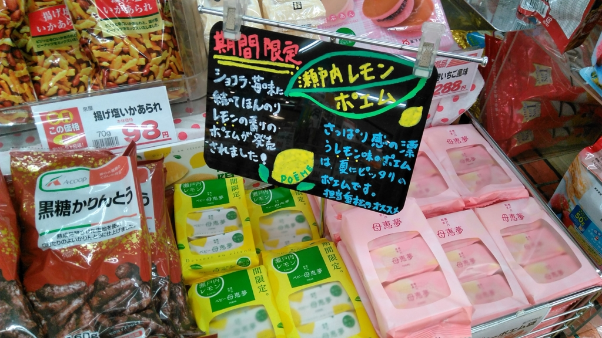
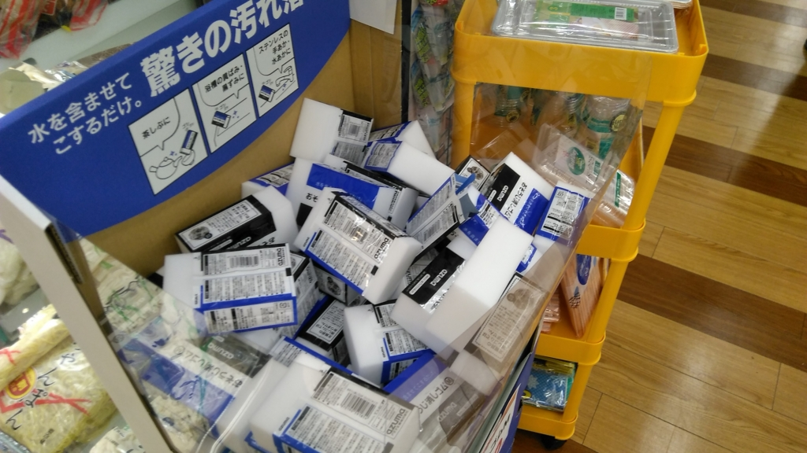
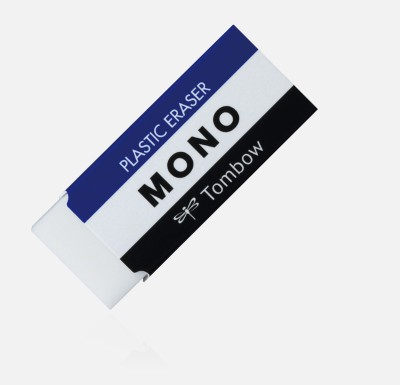

ベビー母恵夢～瀬戸内レモンと謎の消しゴム～
公開日：

近所のハトマートで買い物してたら、母恵夢の期間限定バージョンが売ってた。
早速食べてみたけど……さわやかでいいな。母恵夢ってモフッとした触感のあとに口の中へ甘さがぐわーって広がるやん？ でもそれがちょっとクドい時あるよな。でも、この“瀬戸内レモン”は軽くてさわやかな感じで、割といいと思う。
まぁ、いつも食べるならスタンダードな母恵夢の方がいいかもしれんが……梅雨入りして鬱陶しい季節にはこれだな。今度お客さんがくるときのために、また買おう。

あと、謎の消しゴム（材質は密度が高めのスポンジだけど、パッケージのせいで消しゴムにしか見えん）が大量に売ってたので、これも買ってしまった。

なんかト○ボのM○N○消しゴムに似てるけど、この子が消すのは鉛筆で書いた字ではなく、“汚れ”であるらしい。試しに水をちょっとつけて使ってみたけど、お鍋にこびり付いてた茶色い感じのヤツがトゥルンと落ちていい感じだった。
世の中、どんどん便利になるなー。